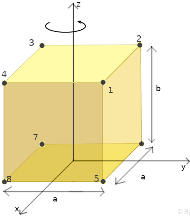

Moment of Inertia
A rotating body possesse kinetic energy, because its constituent particles are moving. The kinetic energy of the ith particle of the body can be expressed as ½ mivi2. The total kinetic energy K of the rotating body is the sum of the kinetic energies of all the particles of which the body is composed.
K = Σ ½mivi2
All the particles have the same angular speed ω but the linear speed vi of each particle depends on the distance from the axis. By using the relation vi = Rω, we can write the kinetic energy of the body as
K = Σ ½miRi2ω2
All these terms have two common factors, ½ and ω2. These terms can thus be factored outside the summation:
K = ½ ω2 (Σ miRi2)
The term in parenthesis is known as moment of inertia, I = Σ miRi2. So the rotational kinetic energy takes the following form:
If we compare the expression of the kinetic energy for translation, K = ½mv2 with that for rotation we see that I is the rotational analog of the mass m and ω is the rotational analog of the speed v.
Example. Let's calculate the moment of inertia for a system of eight material points, of mass m, connected by rigid segments.
We calculate I with respect to the z axis passing through the center of the configuration of points and parallel to the side of length b.
I = ΣmiRi2 = m1R12 + m2R22 + ... + m8R82
All the material points are at the same distance from the rotation axis:
Thus
I = m (a/√2)2 + m (a/√2)2 + ... + m (a/√2)2 = 8m (a/√2)2 = 4ma2
Now, we consider the moment of inertia with respect to a rotation axis passing through the material points 3 and 7. The distance of this axis by the points 1 and 5 is R1 = R5 = sqrt(a2 + a2) = √2a; that of the points 2,4,6 and 8 is R2 = R5 = R6 = R8 = a; and that of the point 3 and 7 is 0. Thus
I = ΣmRi2 = 2m(√2a)2 + 4ma2 + 2m(0)p = 8ma2 ■
Moment of inertia of a “continuous” body
The above ideas can easily be generalized to calculate the moment of inertia of a “continuous” body rotating about a given axis. We must sum all the contributions from a continuum of points corresponding to small volume elements ΔVi with mass Δmi = ρMΔVi, with ρM is the mass density of the solid. The sum over all points i in the solid becomes an integral when the size of each element goes to zero:
I = ΣmRi2 = Σ ρMΔViRi2 ⟶ ∫∫∫ρMR2dV
If the density is uniform it can be taken outside the integral
I = ρM ∫∫∫R2dV
The moment of inertia of a plate D with respect to an axis perpendiculat to the plane of the plate is
I = ∫∫D d2(x,y) σ(x,y) dx dy
where d2(x,y) is the distance of the point (x,y) from the axis of rotation. The inertia moments with respect to the x and y axis are respectively
Ix = ∫∫D x2 σ(x,y) dx dy Iy = ∫∫D y2 σ(x,y) dx dy
Suppose that the initially rigid body somehow redistributes its mass relative to that rotation axis, changing its rotational inertia about that axis, like in the case of spinning person on a stool in Fig.1. No net external torque acts on the system consisting of the student, stool, and dumbbells. Thus, the angular momentum of that system about the rotation axis must remain constant, no matter how the student maneuvers the dumbbells, by Eq 13.1.1, we can express L as
Iωi = Iωf
When student pulls in his arms; this action reduces his rotational inertia from its initial value Ii to a smaller value If because he moves mass closer to the rotation axis. His rate of rotation increases markedly, from ωi to ωf. The student can then slow down by extending his arms once more, moving the dumbbells outward.
a) The student has a relatively large rotational inertia about the rotation axis and a relatively small angular speed. (b) By decreasing his rotational inertia, the student automatically increases his angular speed. The angular momentum L of the rotating system remains unchanged.
The springboard diver
Figure 2 shows a diver doing a forward one-and-a-half-somersault dive. As you should expect, her center of mass follows a parabolic path. She leaves the springboard with a definite angular momentum L about an axis through her center of mass, represented by a vector pointing into the plane of Fig. 2 perpendicular to the page. When she is in the air, no net external torque acts on her about her center of mass, so her angular momentum about her center of mass cannot change:The effect of a uniform gravitational field cancels out over the whole body, and angular momentum is still conserved.

By pulling her arms and legs into the closed tuck position, she can considerably reduce her rotational inertia about the same axis and thus, according to Eq. 13.1.1, considerably increase her angular speed. Pulling out of the tuck position (into the open layout position) at the end of the dive increases her rotational inertia and thus slows her rotation rate so she can enter the water with little splash. Even in a more complicated dive involving both twisting and somersaulting, the angular momentum of the diver must be conserved, in both magnitude and direction, throughout the dive.